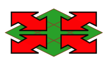

IPSJ Programming Contest Committee
2019/10/07
The SamurAI Dig Here page is a tool to enjoy the game of SamurAI Dig Here on HTML browsers.
You can do the following in the SamurAI Dig Here page.
The figure below shows a sample display image of the page.
The game field is divided into grid-aligned cells.

Four agents, one samurai and one dog for each side, are initially located on some of the distinct cells of the game field. In a single game step, samurai can move to one of the four neighboring cells in one game step, while dogs can move to one of eight neighboring cells. They can also stay in the same cell.

Initially, some of the cells in the game field have a hole, preventing game agents from stepping into them.
Samurai can plug the hole in one of four neighboring cells. Samurai can also dig a new hole in four neighboring cells. Dogs can do neither.

Some of the cells have certain amounts of buried treasure. Positions and amounts of some of them are already known initially, while some are not. The objective of the game is to dig out more treasure than the opponent. Samurai can dig out the buried treasure in neighboring cells by digging new holes there.
Dogs on one of the eight neighboring cells can detect the existence and the amount of the buried treasure. When a dog is on a cell with buried treasure, the position and the amount of the treasure is revealed to all the agents of both teams.
Clicking the import button
 on top of the screen,
a window for selecting a file to import pops up.
A game log is imported by choosing a file.
on top of the screen,
a window for selecting a file to import pops up.
A game log is imported by choosing a file.
Note that, when the game log is updated after importing, loading the same file expecting the updated one to be loaded may fail, because the browser sticks to the cache kept on the first import, that is, the version before the update. Reloading the whole web page by the reload feature of the browser may solve the problem.
The initial play mode is automatic. In the automatic mode, game steps recorded in the game log loaded are visualized, and steps beyond what are recorded are automatically generated with agent moves chosen by players built in the system. The generated moves are appended to the game record.
The game progresses controlled by some of the buttons on the top.
 Buttons on the top left and their functions are as follows.
Buttons on the top left and their functions are as follows.
 Buttons on the top right and their functions are as follows.
Buttons on the top right and their functions are as follows.
In the manual play mode, one of the two samurai can be controlled manually.
Clicking the manual play button
 on the top right starts the manual play mode.
on the top right starts the manual play mode.
The first click on the button makes the red samurai controlled
manually. The button changes its color to red
 .
All the other agents, dogs and the blue samurai, are
controlled by the built-in players.
Another click makes the blue samurai under manual control,
and changes the button color to blue
.
All the other agents, dogs and the blue samurai, are
controlled by the built-in players.
Another click makes the blue samurai under manual control,
and changes the button color to blue
 .
The the red samurai is then controlled by the built-in player,
as well as dogs.
Still another click will revert the play mode to automatic,
changing the button color back to the original white.
.
The the red samurai is then controlled by the built-in player,
as well as dogs.
Still another click will revert the play mode to automatic,
changing the button color back to the original white.

In the manual play mode, arrow symbols are displayed on cells around the manually controlled agent, showing possible plays. Arrows on cells with a hole outlined red. Clicking the cells marked with arrows tells the following.
Actions of the manually controlled samurai can also be told by pressing keys. The keys and their meaning are as follows.
| h w ← | Specifies the lower left cell (↙) |
|---|---|
| j s ↓ | Specifies the lower right cell (↘) |
| k n ↑ | Specifies the upper left cell (↖) |
| l e → | Specifies the upper right cell (↗) |
| . space | Specifies to pause without any actions |
Stepping manually deletes any play records of steps beyond the played step, and the result of the stepping is recorded as the last step.
Automatic plays can also be instructed in the manual play mode.
Single step by the step forward button
 ,
and repetitive play by the play button
,
and repetitive play by the play button
 ,
are possible.
When the play stops, the play mode is kept to be manual.
Rolling back to the initial state by the rewind button
,
are possible.
When the play stops, the play mode is kept to be manual.
Rolling back to the initial state by the rewind button
 is also possible.
is also possible.
Edit mode is enabled by clicking the edit button
 on top of the screen.
The edit mode enables editing, saving, and loading the
game log and/or configuration of the game field.
on top of the screen.
The edit mode enables editing, saving, and loading the
game log and/or configuration of the game field.
The following changes are made on the displayed screen.

 In the edit mode, the border of the cell with the mouse pointer
becomes white, indicating that the cell is being edited.
Any configuration changes discard all of the recorded play.
In the edit mode, the border of the cell with the mouse pointer
becomes white, indicating that the cell is being edited.
Any configuration changes discard all of the recorded play.
Pressing a mouse button on a cell with an agent on it, and dragging the mouse moves the agent another cell. Agents cannot be moved to a cell with buried treasure or a hole; instead, the position will be the cell the mouse cursor was previously on.
If a shift key is pressed when the mouse mouse button is pressed, the agent rotates clockwise. Note that, although this changes the appearance of the agent in the initial state, it has no influence on the game play.
The amount of buried treasure in a cell can be increased or decreased by clicking the mouse button on the cell. With a mouse click without pressing a shift key decreases the amount by 2. When the amount becomes 0, the buried treasure in the cell disappears. A mouse click while pressing a shift key increases the amount by 2. When the click is on a cell while pressing a shift key on a cell without any buried treasure, treasure of amount 2 is buried in the cell.
A mouse click on a cell with buried treasure while pressing a control key toggles the treasure initial status between apparent and hidden. Amounts of hidden treasures are displayed in red figures while those of apparent ones are in yellow.
With a mouse click on a cell with a hole, it is plugged up. Otherwise, if the cell does not have any buried treasure, a new hole is dug out.
Clicking the expand button  increments the number of cells in one side of the field. Clicking it with a shift key pressed down decrements it. The size cannot be made smaller than 6 nor larger than 20. Agents on cells lost on resize will be moved to some other cells. Any holes and buried treasures in the cells lost or on the cell to which an agent is moved will be lost.
The maximum number of steps of the game can be
incremented or decremented by
a mouse click or mouse wheel rotation on the clock icon
 while in the edit mode.
Clicking the icon while pressing a shift key
increments the maximum number of steps and
decrements otherwise.
Rotating the wheel up or down increments or decrements it
respectively.
When a control key is pressed, the change amount is multiplied by 10.
It cannot be set to be less than 10.
while in the edit mode.
Clicking the icon while pressing a shift key
increments the maximum number of steps and
decrements otherwise.
Rotating the wheel up or down increments or decrements it
respectively.
When a control key is pressed, the change amount is multiplied by 10.
It cannot be set to be less than 10.
Clicking the random configurations button
 makes a new random field configuration.
Play logs, if any, will be lost.
makes a new random field configuration.
Play logs, if any, will be lost.
If a shift key is pressed on clicking, only the buried treasures (both hidden and known) are reconfigured at random, without changing the positions of agents and holes.
Clicking the clear log button
 discards play logs, if any, keeping the field configuration as is.
This is meant for saving or exporting the field configuration
without any play logs.
discards play logs, if any, keeping the field configuration as is.
This is meant for saving or exporting the field configuration
without any play logs.
The current game state, that is, the configuration of the game field as well as the play log, can be saved to the storage of the browser for loading afterwards. This storage is kept in the browser of the system; Neither page reloading reload nor browser is restart will destroy the record. The record, however, cannot be accessed with other browsers or on other systems.

Clicking the save button
 on the screen top, a dialog window pops up for entering a name.
When the name is entered, the current game is saved with that name.
Game states saved with the same name, if any, will be overwritten.
on the screen top, a dialog window pops up for entering a name.
When the name is entered, the current game is saved with that name.
Game states saved with the same name, if any, will be overwritten.

Clicking the load button
 on the screen top, a list of names of saved game states appears.
Choosing one of them will load the game state with that name.
on the screen top, a list of names of saved game states appears.
Choosing one of them will load the game state with that name.
Clicking the remove button
 on the screen top, a list of names of saved game states appears.
Choosing one of them will remove the game state with that name
from the storage.
on the screen top, a list of names of saved game states appears.
Choosing one of them will remove the game state with that name
from the storage.
Clicking the export button
 on top of the screen,
a window to input the name for a file pops up.
on top of the screen,
a window to input the name for a file pops up.
 Game log of the current game is exported into the file with
given name.
If no file name extension is specified,
the extension of ".dighere" is automatically appended to
the name.
Game log of the current game is exported into the file with
given name.
If no file name extension is specified,
the extension of ".dighere" is automatically appended to
the name.
Clicking the exit edit mode button
 on the screen top ends the edit mode,
and the display the initial state reflecting the editing.
on the screen top ends the edit mode,
and the display the initial state reflecting the editing.
Detailed settings can be altered with the settings dialog
shown by clicking the ettings button
 .
.

Several music tunes are provided to be played during the automatic plays. They are different arrangements of Hanasaka Jijii, a popular nursery song about a dog barked on embedded treasure. You can choose a tune, with the selector labeled "BGM", or choose "MUTE" if you don't want music.
The field to the right of the hole icon is for setting the probability of holes in the game field cells on random configurations.
Three fields to the right of the treasure icon are for controlling configurations of treasures on random configurations. The first one is for setting the probability of treasures in game field cells. The next, labeld "max", is for setting the maximum amount of treasure in a cell. This should be a positive even number. If an odd number or a number less than 2 is specified, the value is adjusted to satisfy the constraints. The rightmost one, labeled "hidden%" is the probability that the treasures are hidden.
Three icons to the right of the label "Randomize" indicate which game field features are to be configured on random configurations. Icons with red borders means that the corresponding features are to be configured randomly. Others are kept without reconfiguration. Clicking these icons can toggle whether or not the features are to be configured.
Clicking the "Done" button will make the changes made take effect. Clicking the "Cancel" button will discard all the changes. Either will close the dialog.